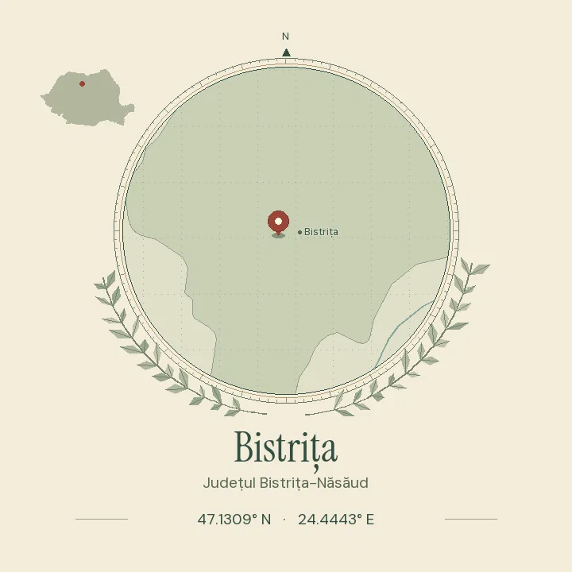
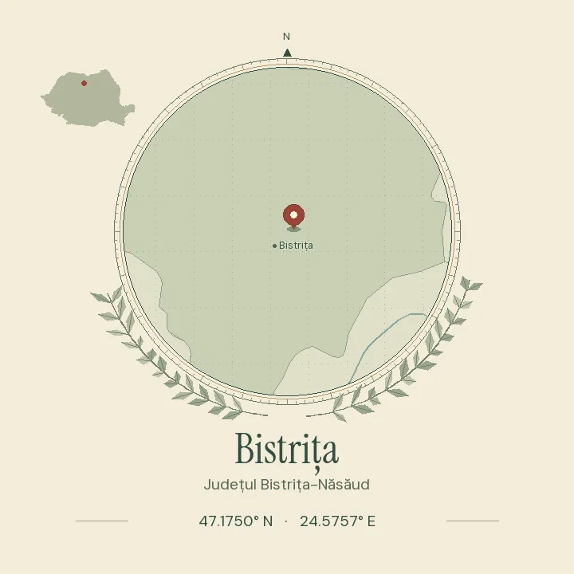
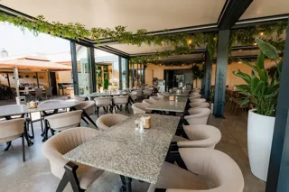
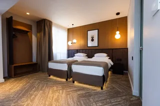
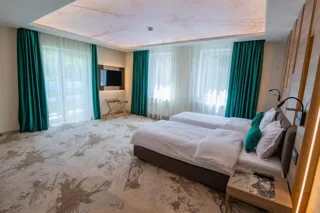
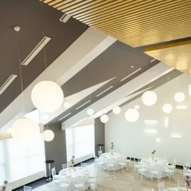
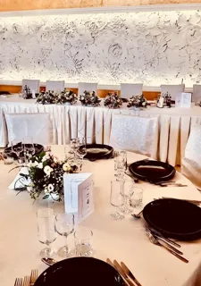
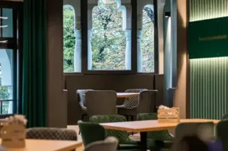
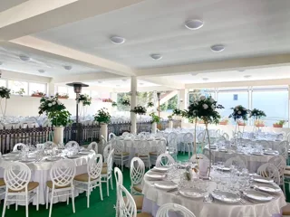
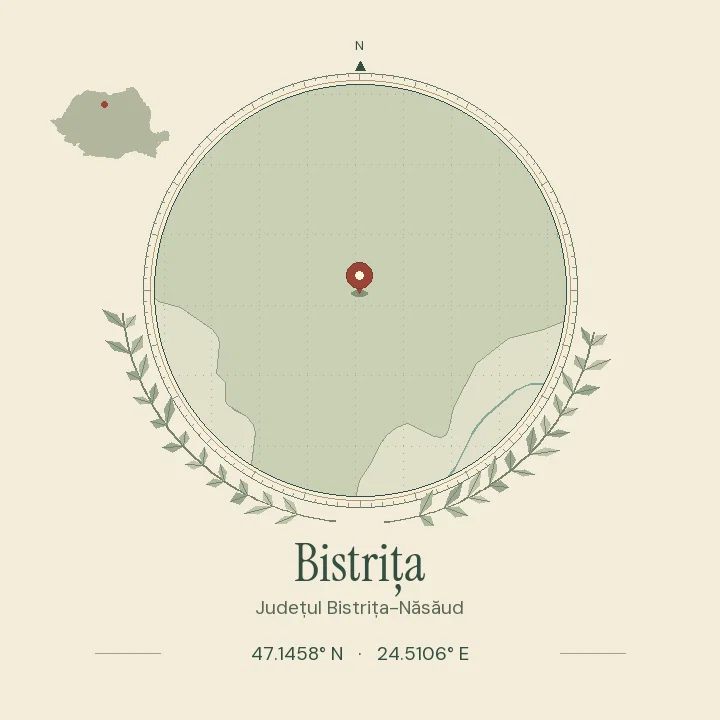

Locații de nuntă în Bistrița
- locații în director
- 11
- cu cazare în registrul SITUR
- 5
- medie ponderată Google
- 4,4 / 5
- evaluări Google
- 10.778
Cum alegi o locație în Bistrița
În Bistrița poți începe comparația cu Conacul Burzo (restaurant arab), Pensiunea Conacul lui Horia (hotel), Pensiunea Terra (restaurant). Aceste proprietăți apar în primele poziții când luăm în calcul împreună nota și numărul de evaluări Google. Salvează adresele care vă interesează pentru a le așeza apoi alături în fișa de comparare a ofertelor.
În fișele proprietăților poți compara dotări concrete la Conacul Burzo (restaurant), Pensiunea Conacul lui Horia (cazare). Pentru oferta de nuntă, întreabă ce spații și servicii dintre cele prezentate intră în rezervarea privată pentru data voastră.
Dacă vin rude de departe, Pensiunea Conacul lui Horia are o unitate de cazare asociată în registrul SITUR. Înregistrarea pentru Conacul Lui Horia cuprinde 10 locuri de dormit în 5 spații de cazare. Întreabă câte camere pot fi păstrate pentru aceeași noapte înainte să trimiți invitaților detaliile de rezervare.
Dacă vrei să vezi două proprietăți în aceeași zi, poți continua de la Pensiunea Conacul lui Horia spre Pensiunea Elis din Dorolea. Punctele lor sunt la 2,9 km în linie dreaptă. Deschide traseul înainte să fixezi ora celei de-a doua vizite, mai ales dacă grupul se deplasează cu autocarul.
Locații pentru vizionare
Ordinea ține cont de nota Google și de numărul evaluărilor. Cum calculăm ordinea

Hartă ilustrată Bistrița · Restaurant arab
Conacul Burzo
Conac în stil rococo pe strada Astrelor din Bistrița, cu grătar și afumătoare; nota 5 din 26 de evaluări, dar drum de acces dificil.
Str. Astrelor, 420666 Bistrița+40 743 794 676
Hartă ilustrată Bistrița · Hotel
Pensiunea Conacul lui Horia
Pensiunea Conacul lui Horia, Bistrița. Curtea de la Conacul lui Horia i-a rămas în minte unui oaspete datorită deschiderii către dealuri.
Strada Drumul Dorolii Nr. 144E, 456700 Bistrița+40 740 238 811
Fotografie a locației · Sursa fotografiei Bistrița · Restaurant
Pensiunea Terra
Pensiunea Terra. Un client al restaurantului de la Terra descrie un prânz cu ciorbă de burtă, paste carbonara, șnițel și ceafă de porc cu scrijele.
Str. Simion Mândrescu 43, 420107 Bistrița+40 263 235 999Fotografie a locației · Sursa fotografiei Bistrița · Hotel
Hotel ART Metropolis
Hotel ART Metropolis, Bistrița. Pentru un oaspete de la Art Metropolis, zona spa a completat sejurul cu masă și cazare la Bistrița.
Strada Parcului 19, 420035 Bistrița+40 747 809 999
Fotografie a locației · Sursa fotografiei Bistrița · Hotel
Grand Hotel Coroana
Grand Hotel Coroana, Bistrița. Un vizitator de la Coroana din Bistrița își amintește că în timpul șederii sale era cazată și o echipă de handbal.
Piața Petru Rareș 4, 420036 Bistrița+40 751 323 486
Fotografie a locației · Sursa fotografiei Bistrița · Hotel
Hotel Codrişor
Hotel Codrişor, Bistrița. Turnul Dogarilor și parcul sunt reperele date de un oaspete care a stat la Codrișor în Bistrița.
Strada Codrişor 16, 420179 Bistrița+40 774 018 323
Fotografie a locației · Sursa fotografiei Bistrița · Hotel
Hotel Bistrița
Hotelul Bistrița a primit un grup de cincizeci de turiști, potrivit persoanei care descrie rezervarea și ajutorul primit la repartizarea cazării.
Piața Petru Rareș 2, 420036 Bistrița+40 730 660 837
Fotografie a locației · Sursa fotografiei Bistrița · Restaurant
Pensiunea Morariu
Pensiunea Morariu, Bistrița. La Morariu, o persoană a cerut toate camerele pentru petrecerea de după nuntă și un meniu pentru ziua următoare.
Strada Gorunului 1, 420115 Bistrița+40 744 697 167
Fotografie a locației · Sursa fotografiei Bistrița · Restaurant cu specific românesc
Restaurant Conacul Verde (Bistrița)
Restaurant Conacul Verde (Bistrița), Bistrița. La Conacul Verde din Bistrița, un client remarcase varietatea preparatelor de post.
Bulevardul Republicii 79, 420053 Bistrița+40 748 266 554
Fotografie a locației · Sursa fotografiei Bistrița · Hotel
Hotel Diana
Hotel în Bistrița cu terasă de 350 de locuri și parc propriu; 3,8 din 672 de evaluări. Un revelion lăudat, dar și probleme la camere.
Calea Moldovei 80, Bistrița+40 744 625 013
Hartă ilustrată Bistrița · Bed & Breakfast
Saphir
O persoană care a contactat telefonic Saphir spune că suma comunicată inițial a fost diferită de cea cerută la sosire.
Calea Moldovei 15C, 420096 Bistrița+40 752 227 593
Întrebări despre locațiile din Bistrița
Unde pot dormi invitații în Bistrița?
În registrul de cazare SITUR găsim Pensiunea Conacul lui Horia (10 locuri de cazare), Pensiunea Terra (30 de locuri de cazare), Grand Hotel Coroana (167 de locuri de cazare). Verifică ce camere sunt libere pentru noaptea evenimentului.
Ce proprietăți din Bistrița au grădină sau terasă?
Pensiunea Terra (terasă); Hotel Codrişor (terasă); Hotel Diana (terasă). Cere administratorului condițiile de folosire pentru o petrecere privată.
Care locație din Bistrița are cele mai multe evaluări Google?
Pensiunea Terra are 2.584 de evaluări în profilul Google folosit la documentare. Evaluările acoperă și alte experiențe la proprietate, inclusiv vizitele fără eveniment.
Unde apare o intrare accesibilă în Bistrița?
Profilurile Google indică o intrare accesibilă la Pensiunea Terra, Pensiunea Morariu, Restaurant Conacul Verde (Bistrița). Pentru o cununie în exterior, cere detalii despre traseul dintre intrare și zona cu scaune.
Vizionări în apropiere
- Dorolea · 1 locație. Între Pensiunea Conacul lui Horia și Pensiunea Elis sunt 2,9 km în linie dreaptă.
- Arcalia · 1 locație. Între Conacul Burzo și Castelul Bethlen sunt 8,5 km în linie dreaptă.
- Coldău · 1 locație. Între Conacul Burzo și Pensiunea Brădet sunt 23,2 km în linie dreaptă.